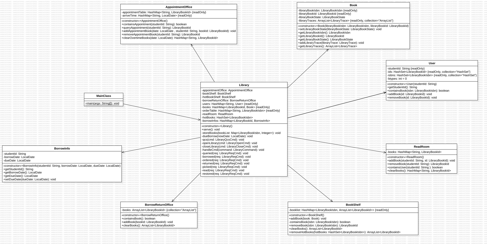

OO Unit4
正向建模与开发
本单元以图书馆系统为背景，设计了一个增量迭代任务，并要求进行架构设计并完成类图、状态图、顺序图等UML图。完成后感觉，只要以图书馆为中心协调各个部分，用户、书架、借还处等实体分工合作，就可以获得一个易于迭代的架构：每次新增功能时增加对应类，在图书馆中添加相关协作逻辑即可，不需要进行大量的改动
架构设计
本单元作业的架构如下：

本单元作业以Library为核心，协调其他各个类之间的协作；其他类储存自身的数据并实现相关方法供Library调用。
代码设计和UML模型设计的追踪关系
一致性
代码的类、属性、方法实现与UML类图均一致，书本的状态转换与状态图一致，代码方法的调用与时序图中的消息调用链也一致
完整性
UML中的元素均与代码中的实现一一对应
正确性
泛化关系均通过继承或借口正确映射
大模型辅助正向建模
大模型使用体验
大模型可以根据指导书内容分析需求，并给出一个大致的架构，但是一次直接生成的架构往往会有遗漏，需要自行补充完善或多次对话完善
大模型引导
对于复杂的场景，首先需要手动提取出需要大模型关注的内容，减少干扰；然后在提示词中明确需要大模型完成的任务，避免大模型思维发散；大模型输出了架构设计后，提供反馈让大模型改进。总的来说，大模型往往不能一次完成架构设计任务，需要多轮的对话调整。
架构设计思维的演进
在四个单元的学习中，设计的架构可拓展性逐步提高，并不断朝着高内聚、低耦合的方向前进
在第一单元中，学习了继承与抽象，并用以设计简单的架构
从第二个单元开始，逐渐了解并实践了一些经典的模型，比如生产者-消费者模型。这些模型比较好地抽象出了类与类之间的协调关系，使得实现的代码有了更清晰的架构，方便调试以及之后的迭代
第三、四单元的架构比较简单，基本上直接依照指导书要求就可以设计出不错的架构
测试思维的演进
OO课中debug是不得不品的一环。
在第一单元，我采用了JUnit和评测机相结合的测试方法，每完成一个类就写一个相应的JUnit测试，最后再由评测机上量
之后的几个单元则专注于评测机编写（这大概也是一种退化），结合一些手搓的数据测试性能
测试数据覆盖更全面
写数据生成器的过程中肯定越来越注意数据覆盖的全面性了，也使用了各种策略来提高数据的全面性，尤其是第三单元的图评测
性能测试和正确性测试相结合
评测机不太容易测出性能问题，需要自己注意代码中性能较差的部分并针对性地构造数据测试
课程收获
- 在每周一次的迭代开发历练下，代码能力有了很大提升，debug能力也增长了不少
- 学习到了面向对象编程的思想，此后不管写面向对象还是面向过程都会好好封装
- 提升了架构设计的能力，同时也感受到了架构设计对后续迭代的影响。多多少少感受到自己的代码没有那么shi山了
在这一个学期，有强测爆点的痛苦，有互测的血流成河，有清明时节的死锁幽灵，也有rtle的不明所以。大二下半学期已经染上了OO的颜色，或许你会问我，若再来一次，是否还会选择OO。但我确实不想再写了，完结撒花~